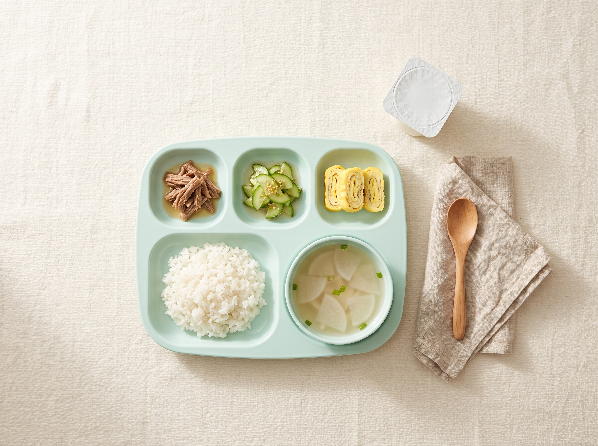

한 칸에 하루가 들어갑니다. 오전 간식 → 점심(밥·국·찬 4) → 오후 간식 순서입니다. 간식은 동원이팜 11월 간식 식단표 기준이고, 점심은 구성 예시입니다.
오전·오후 간식은 동원이팜 11월 간식 식단표 그대로이고, 점심(밥·국·찬)은 구성을 보여 드리기 위한 예시입니다. 실제 식단은 시설 협의에 따라 조정됩니다. 알레르기 유발 식품은 사전에 안내해 드립니다.
한 끼는 밥·국·주찬·부찬·간식 다섯 가지로 구성합니다. 연령과 시설 식단에 맞춰 조정합니다.

실제 배식은 시설 식단에 따릅니다.
영유아 전용 브랜드 이팜키즈와 시설 맞춤 be chef. 라인업에서 고릅니다. 규격·함량·보관 기준을 확인해 아이들이 먹기 좋게 구성합니다.
가격은 상담 시 안내합니다. 품목은 월별로 교체됩니다.
동원홈푸드는 매월 식단표·간식 소개·레시피북을 새로 발행합니다. 이츠밀은 그 자료를 그대로 받아 시설에 맞게 조정합니다. 원본을 눌러 크게 확인하실 수 있습니다.